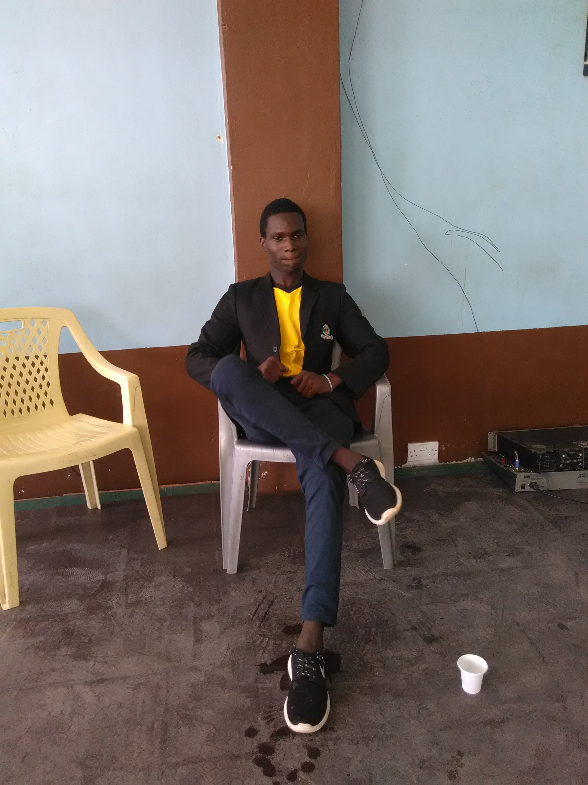

HOME
Every person has their own unique story. Here is a glimpse into mine.
I am Douglas a student at moringa school currently studying it computer programming and codding, i have managed to gain skills like web development and also to interact with alot of websites and computer languages.
My passion for it begun immidietly when i started doing computer packages i found it more interesting and enguaging since i like things to do with compurets and technology.


ABOUT ME
I am the second born in the family of three children, raised by a single mother in Nairobi.I have attended school from primary to adiploma which i amcurrently doing I.T (coding and programming), this journey has not been easy becouse i can remember there are many times i was sent home for schoolfees especially when i was in high school, my mother couldn't afford to pay schoolfees for the two of us.
It reached a point when i was in form two i thought of dropping out becouse of beeing sent home numerouse times ,like every time people had tobe sent home i knew that i wount survive so i had to prepare myself when i hered about fee balance ,it was an embaressment to me whe people saw that every term i am home doing nothing ,sometimes i pretended tht i am sick just to evade the gossiping of people, staying at home really draged me behind i even started performing poorly in school.
I love playig football, and creative arts drawing the most also i love technology most thing to do with gadgets and elecronics.When i was young i used to connect wires, batterys, motors, and bulbs my joy was to see them working as i expected. I am antisocial sometimes and thatswhat i am trying to work on,i am noteasy to make friends it takes timeor me but i seepeopleare somehoweasy to make friendship in thefirstmeeting, i am in a certain organisation wherewe train the kids on socil abehaviours, that confidence of talking to many people is what i am gaining and ibelievethat soon enough i will be making friends easily like other people.
On my free time i listen to music, watch movies, draw pictures, or play soccer,i also like making box houses becouse they look good and it can also be sold for decoration in the house
PROFESSIONALISM
I have done ict , i am a community coach i have also attended lifeskills courses and now i am working on being a professional in I.T websitedeveloping and codding, i can work under minimum supervision becouse i know good work ethics that are expected from the empoyee.
I also worked in a certain bakery in Kariobani in the packaging sector for five months and even before that i used to volunteer in an non-govermental organisation as a youth leader which i gained skill in coaching, comming up with activational games for both elderly people and kids
CONTACT, FOLLOW ME
I am on tweeter @C_dagian254
Instagram @C_Dagian

Whatsap on 0711747656